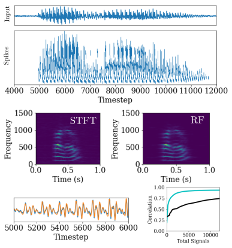

Contents
Spiking Neural Networks¶
Robust Computation with Rhythmic Spike Patterns¶

Summary¶
The basis for how we understand neural networks is linear algebra – vectors and matrices. We see neurons in the brain signal through spikes, and we connect these spikes to vectors through the theory of rate-coding. This means that more spikes from a neuron is related to a larger number in a vector. The synapses between neurons has a synaptic weight, and the spikes influence the target neurons the way that a vector dot products with a weight matrix.
In this paper, we flesh out an alternative neural code that uses spikes and spike-timing to represent information. The theoretical link between spikes and vectors is the same, except we are now considering complex-valued vectors. Similarly, we use a matrix-vector dot product to represent how neurons communicate with each other through synapses, but again the matrix is also complex-valued.
The insight of the paper is that complex numbers are related to circles and oscillations. We see oscillations in many different nervous systems and at different frequencies. We show that mathematically, you can consider a single spike as representing a complex number, where the timing of the spike relative to some background oscillation indicates the phase of the complex number. You can also represent a complex-valued weight matrix by including synaptic delays. The spike being delayed by a synaptic delay is equivalent to the phase-shift induced when multiplying two complex numbers.
In this paper, we use these mathematical connections to build a complex-valued version of the Hopfield network. The Hopfield network is widely known for its description of attractor-dynamics and many theoretical ideas as well as experimental studies point to the use of attractor-dynamics in neural computation. The complex-valued version of the Hopfield network we denoted as Threshold Phasor Associative Memory (TPAM), which allows one to store complex vectors as attractor-states. By providing a cue of a noisy or partial stored pattern, the dynamics of the network would restore the original pattern.
We then built spiking neural networks that implement these dynamics, which leads to a network that can produce stable, precisely-timed patterns of spiking activity. We explored two different ways of building such a network. The first network uses resonate-and-fire neurons, which have an intrinsic oscillatory dynamics, which is simple and more computationally friendly. The second network is more closely inspired by biology, where neurons are standard integrate-and-fire models and the oscillation is induced through recurrent feedback of inhibitory neurons. This version accounts for some neuroscientific principles, such as Dale’s Law, mimics more closely what is known about neural circuits in the cortex, and is more directly relatable to electro-physiology experiments.
Neuromorphic nearest neighbor search on Intel’s Pohoiki Springs¶
Summary¶
A myriad of data science applications rely on finding the nearest neighbor to an input cue amongst a large database of training samples. Neuromorphic computing holds promise in performing nearest neighbor search more efficiently than traditional methods. But, the algorithm for nearest neighbor search must be matched to the hardware to realize this potential.
We used ideas from neuroscience to encode input cues as a spike-timing pattern. In this coding scheme, spikes earlier in time correspond to larger magnitude coefficients in the input cue vector. Through integration of synaptic inputs, the nearest neighbors are computed and the timing of output spikes corresponds to the closest matches, with the earliest spikes being the closest match.
We built this algorithm at large-scale on Intel’s Pohoiki Springs – a mesh of 768 interconnected Loihi chips capable of simulating nearly 100 million neurons. This implementation was a first-step that is competitive with other large-scale nearest neighbor algorithms in terms of latency and energy efficiency, and it has big advantages in index build-time.
Efficient Neuromorphic Signal Processing with Loihi 2¶

Summary¶
The formalism of how to represent complex numbers and perform complex matrix multiplication described in Robust Computation with Rhythmic Spike Patterns leads to the potential to use spike-timing codes to perform Fourier analysis. A standard signal processing algorithm is the spectrogram, or short-time fourier transform (STFT). This can be computed naturally with the dynamics of Resonate-and-Fire (RF) neurons. By simply forming a bank of RF neurons, each neuron with a its own resonant-frequency, then an input signal can be integrated by the neurons and the output spikes correspond to the complex-valued coefficients of the STFT.
But wait theres more! Complex-valued computations are a great tool for spatio-temporal filtering of video data. We described an algorithm for optic flow estimation based on the classic Adelson and Bergen, 1985 model. In this model, saptio-temporal gabor filters are computed through the integration dynamics of RF neurons. The outputs of this filtering are combined to produce an estimate of optic flow. We showed that this simple and straight-forward method for computing optic flow is competitive with much more complex deep learning networks, but our model is far more efficient.
Finally, we extend the capabilities of supervised learning to learn with RF neurons. We show a keyword spotting application based on training multi-layer RF networks. Further, we describe how the RF neuron can be extended to a Hopf resonator and how this could be used for signal processing applications.